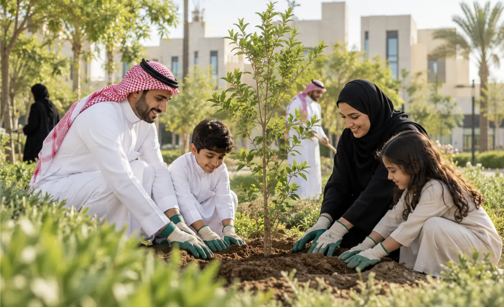
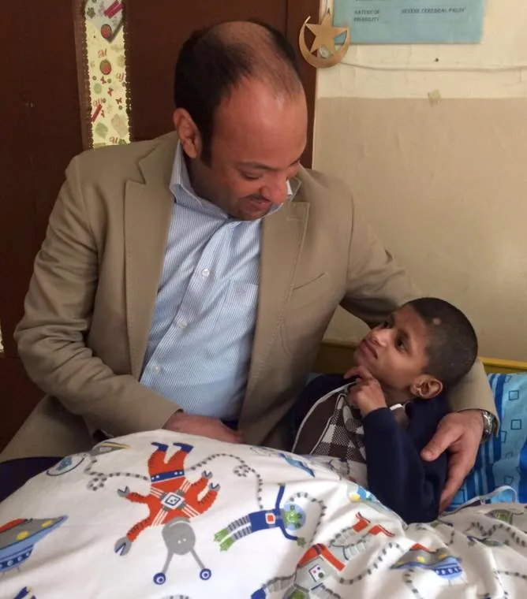

The A'amal Foundation
The group's charitable arm, supporting initiatives that create lasting impact in the communities where we work.
We believe development starts with the community — and that responsible business is good business.

The group's charitable arm, supporting initiatives that create lasting impact in the communities where we work.
An initiative celebrating and developing role models who inspire the next generation.
A participant since 2021, A'amal is committed to the Compact's ten principles on human rights, labour, environment and anti-corruption.
[Link to latest Communication on Progress]

A'amal Group understands the critical need to be an active part of social responsibility projects. Our Founder & CEO, Mr. Yassin Al Suroor, is an active humanitarian who has been involved in numerous social projects around the world, using his corporate experience to make a difference for a better world.
Some of the projects Mr. Yassin has been involved in: